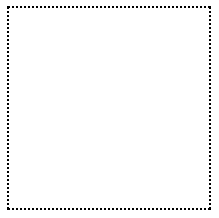
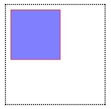
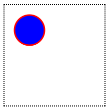

Notes PART I
HTML5 APIs
- HTML5 is the latest incarnation of the Hypertext Markup Language. It covers a variety of technologies, including several APIs that are accessible using JavaScript.
- The data- attribute is a way of embedding data in a web page using custom attributes that are ignored by the browser. They're also private to a page, so are not intended to be used by an external service - their sole purpose is to be used by a JavaScript program.
- The names of these attributes can be decided by the developer, but they must use the following format:
_Start with data-.
_Contain only lowercase letters, numbers, hyphens, dots, colons or underscores.
_Include an optional string value.
Example:
data-powers = 'flight superSpeed'
data-rating = '5'
data-dropdown
data-user = 'DAZ'
data-max-length = '32'
- The value of data-max-length will return a string, but can easily be converted into a number using the following code:
const maxLength = Number(element.dataset.maxLength); - The Web Storage API has some crucial differences with cookies:
_Information stored is not shared with the server on every request.
_Information is available in multiple windows of the browser (but only if the domain is the same).
_Storage capacity limit is much larger than the 4KB limit for cookies ( There is no actual limit in the specification, but most browsers have a limit set at 5GB per domain.).
_Any data stored does not automatically expire as it does with cookies. This potentially makes cookies a better choice for something like showing a popup once a day. - The Geolocation API allows you to access the geographic coordinates of the user's device, as long as the user gives permission.
- By using JSON, we can store any JavaScript object in local storage.
- The Geolocation API is used to obtain the geographical position of the device. The position object has several other properties that can be used to find out information about the location and movement of the device: position.speed, position.altitude, position.heading, position.timestamp
- The Service Worker API allows a worker script to run in the background with the added benefit of being able to intercept network requests. This allows you to take alternative action if the network is offline, and effectively create app-like offline experiences.
- Websocket is a new protocol that allows two-way communication with a server - also known as push messaging. This means that a connection is kept open and responses are 'pushed' to the client as soon as they are received.
- The Notification API allows you to show messages using the system's notifications. This is usually a popup in the corner of the screen, but it changes depending on the operating system. An advantage of using the system notification is that they will still be displayed even if the web page that calls them isn't the current tab.
- The <audio> and <video> tags are used to insert audio and video clips into a web page. It also introduced a Media API for controlling the playback of the clips using JavaScript. The controls attribute can be added (without any value) and will display the browser's native controls, such as play, pause, and volume control, as can be seen in the screenshot below.
- The list of APIs is constantly growing, and includes APIs for accessing a device's camera, uploading files, accessing the battery status, handling push notifications, building drag-and-drop functionality, creating 3D effects with WebGL, and many more!
- The canvas element can be used to dynamically draw geometric shapes, text, and images on a web page in real-time using JavaScript.
- A shim or polyfill is a piece of code that adds support of missing features to older browsers.
Canvas, SVG, and Drag and Drop
- With HTML5's Canvas API, we can draw anything we can imagine, all through JavaScript.
- To create a canvas element we do the following:
<canvas id="myCanvas" class="myCanvas">The text in between the canvas tags will only be shown if the canvas element is not supported by the visitor's browser. Note that we added an ID to grab the element from the DOM.
Sorry! Your browser doesn't support Canvas.
</canvas>
Let's add a width and height attribute to the canvas element:
<canvas id="myCanvas" class="myCanvas" width="200" height="200">
Sorry! Your browser doesn't support Canvas.
</canvas>
Finally, let's add a border to our canvas using some CSS to visually distinguish it on the page.
.myCanvas {
border: dotted 2px black;
}
We can view the canvas container on our page:
 - We need to grab hold of the canvas element on our page:
var canvas = document.getElementById("myCanvas");
We obtain our drawing context by calling the getContext method and passing it the string "2d", since we'll be drawing in two dimensions:
var canvas = document.getElementById("myCanvas");
var context = canvas.getContext("2d"); - strokeStyle and fillStyle are set on a context object, and both take one of three values: a string representing a color, a CanvasGradient object, or a CanvasPattern object.
- To draw a rectangle with a red border and blue fill, we do the following:
var canvas = document.getElementById("myCanvas");
var context = canvas.getContext("2d");
context.strokeStyle = "red";
context.fillStyle = "blue";
- fillRect and strokeRect methods take the X and Y coordinates where you want to begin drawing the fill or the stroke, and the width and height of the rectangle. Example:
var canvas = document.getElementById("myCanvas");
var context = canvas.getContext("2d");
context.strokeStyle = "red";
context.fillStyle = "rgba(0, 0, 255, 0.5)";
context.fillRect(10, 10, 100, 100);
context.strokeRect(10, 10, 100, 100);
- Paths create a blueprint for your lines, arcs, and shapes, but paths are invisible until we give them a stroke.
- An arc is a segment of a circle, but as there's no method for creating a circle, we can draw a 360° arc. Example:
function drawCircle(canvas) {
var canvas = document.getElementById("myCanvas");
var context = canvas.getContext("2d");
context.beginPath();
context.arc(50, 50, 30, 0, Math.PI*2, true);
context.closePath();
context.strokeStyle = "red";
context.fillStyle = "blue";
context.lineWidth = 3;
context.fill();
context.stroke();
}
The signature for the arc method is: arc(x, y, radius, startAngle, endAngle, anticlockwise). - getImageData will return an ImageData object, which contains three properties: width, height, and data. With data we can manipulate images by modifying the pixels in the ImageData object, which will be returned in a form of an array. Each pixel on the canvas will have four values in the data array, which correspond to that pixel's R, G, B, and A values.
- We can covert the color image to black and white. We can do the same to make our color video black and white.
- SVG stands for Scalable Vector Graphics, a specific file format that allows you to describe vector graphics using XML. A major selling point of vector graphics in general is that, unlike bitmap images (such as GIF, JPEG, PNG, and TIFF), vector images preserve their quality even as you blow them up or shrink them down.
- Since SVG is an XML file format, it's also more accessible to search engines than canvas.
- Drawing a circle in SVG is arguably easier than drawing a circle with canvas. Here's how we do it:
<svg xmlns="http://www.w3.org/2000/svg" viewBox="0 0 400 400">
<circle cx="50" cy="50" r="25" fill="red"/>
</svg>
- Raphaël is an open-source JavaScript library that makes drawing and animating with SVG much easier.
- The Drag and Drop API allows us to specify that certain elements are draggable, and then specify what should happen when these draggable elements are dragged over or dropped onto other elements on the page.